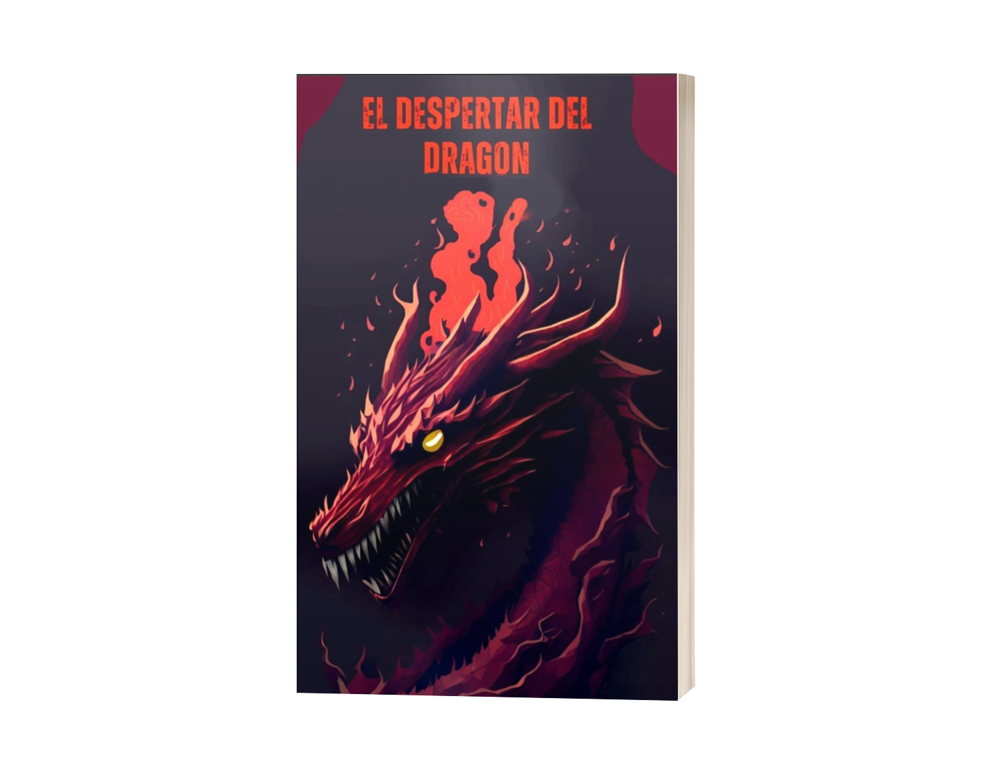
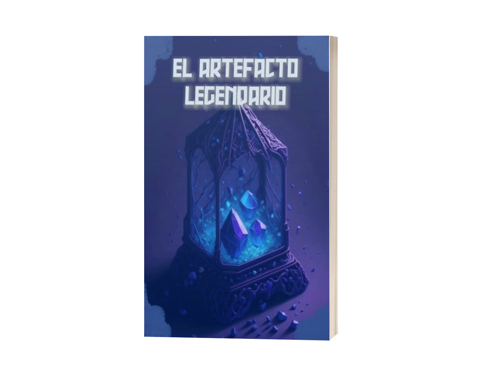
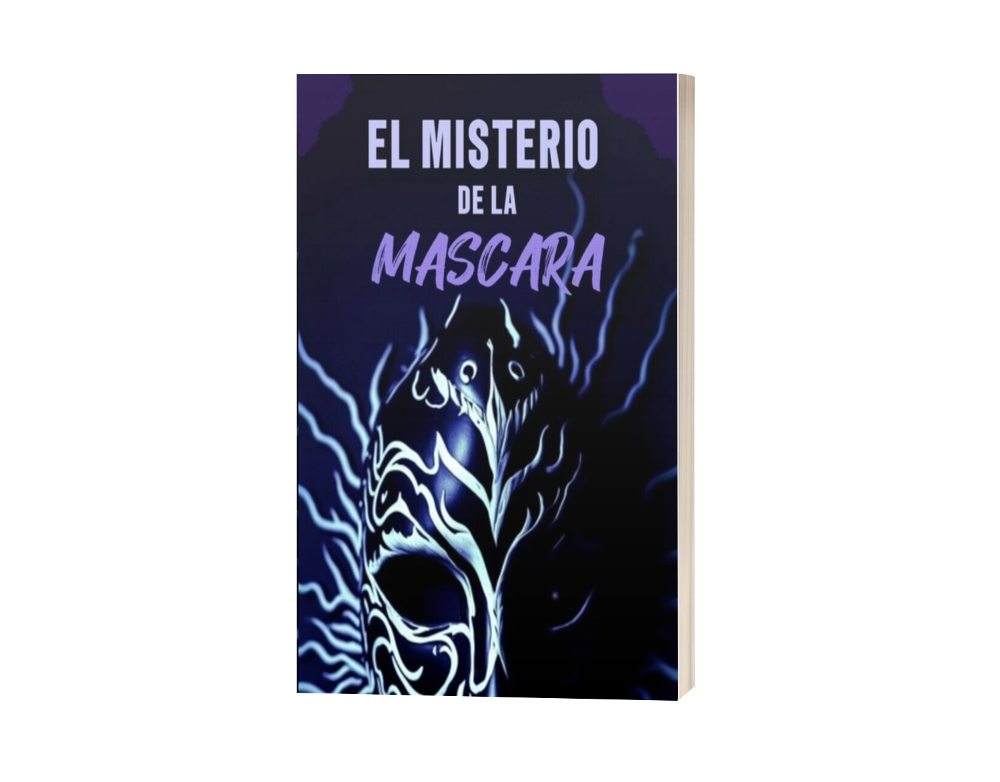
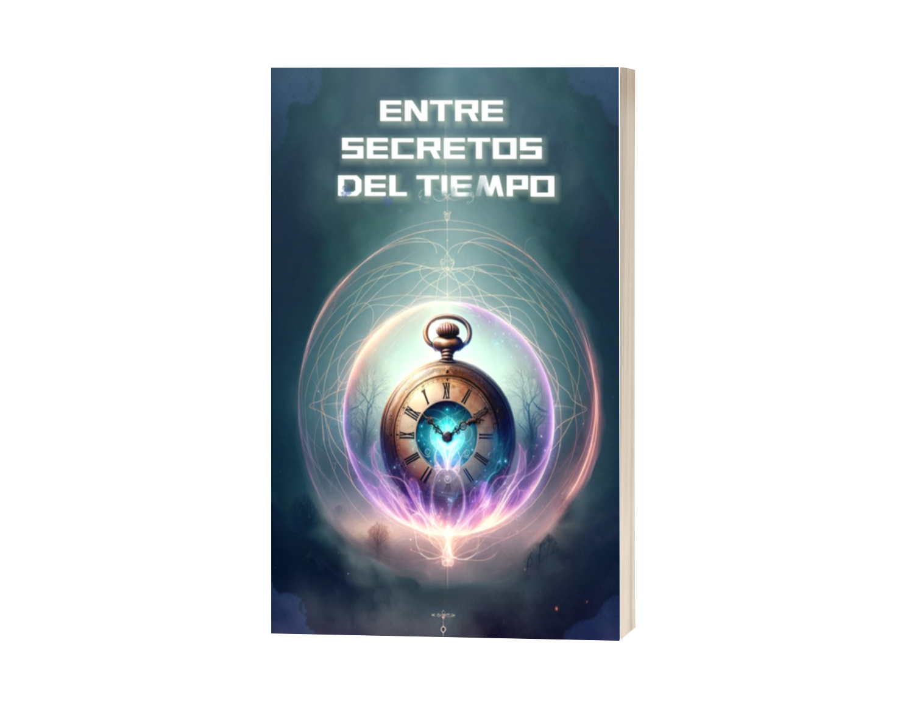
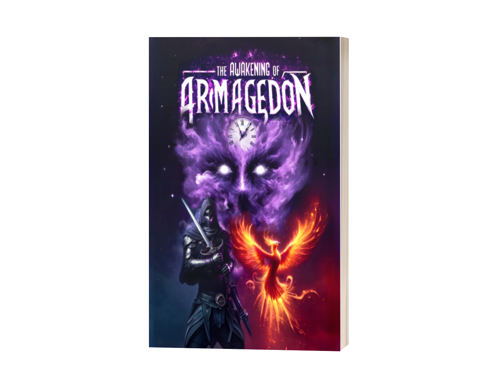

Alexander Alvarez
Autor | Youtuber | Desarrollador | Innovador
Raíces y Pasiones
Alexander Alvarez (6 de noviembre de 2008) es un autor y YouTuber hondureño. Es conocido por su serie de libros de fantasía "Jack y el Legado del Mentor" (anteriormente publicada como Las Aventuras de Jack y sus Amigos) y por su canal de YouTube, AleXCrafter, donde crea contenido sobre videojuegos.
Su interés por la tecnología comenzó en su infancia, explorando el desarrollo de pequeños juegos con herramientas como Unity y Roblox Studio. Sus pasiones incluyen la literatura, los videojuegos, el ajedrez y el piano, un conjunto diverso que nutre su pensamiento lógico y su expresión artística.
Comenzó su carrera como escritor a los 14 años. La idea para su primera historia surgió en enero de 2023, durante un viaje a Estados Unidos. Lo que inició como una prueba de su imaginación se convirtió rápidamente en un proyecto sólido. Publicó su primer libro ese mismo año y, para marzo de 2025, ya contaba con la pentalogía completa impresa en Amazon, evidenciando una notable evolución y dedicación.
"Alexander es un joven con una mente brillante y una imaginación sin límites, que ha logrado pasar de la excelencia académica a las letras de Amazon."
La Saga de Jack: Un Universo Literario
La piedra angular de su carrera es la saga de fantasía y aventura "Jack y el Legado del Mentor". Esta serie sumerge a los lectores en las peripecias de Jack, un joven valiente que junto a sus compañeros Wu y Lila enfrenta peligros inminentes frente a misterios ancestrales. Cada entrega de la serie se teje con las demás, creando una trama interconectada que enriquece el universo narrativo.
Un pilar fundamental en su proceso es la integración de la Inteligencia Artificial como herramienta creativa, trabajando en sinergia con la imaginación humana para materializar ideas complejas. Además, ha colaborado con artistas como Fares Hernandez para dar vida a algunas de las ilustraciones en las portadas de la saga.
"De la inocencia nace la ilusión, de la tragedia, puede renacer la esperanza, pero solo una generación podrá reescribir el legado"
Obras Destacadas
Esta pentalogía, forjada durante dos años, es una epopeya que explora tragedias y errores generacionales, pero sobre todo exalta la importancia del trabajo en equipo, la amistad, la redención y la esperanza.

El Despertar del Dragón
El inicio de la épica aventura.

El Artefacto Legendario
Un objeto ancestral desata nuevos desafíos.

El Misterio de la Máscara
Secretos ocultos y peligros inesperados.

Entre Secretos del Tiempo
Viajes a través de la historia y revelaciones.

El Despertar del Armagedón
El clímax de la saga, donde todo está en juego.
AleXCrafter: Comunidad Gamer
Bajo el alias de AleXCrafter, gestiona el vibrante canal de YouTube @AleXCrafterOficial. Con una sólida base de más de 4,800 suscriptores, el canal se ha convertido en un punto de encuentro para entusiastas de los videojuegos, enfocándose especialmente en el universo de Minecraft, donde abarca desde tutoriales y gameplays hasta exhaustivas reviews de actualizaciones.
La conexión entre su faceta de escritor y su presencia en YouTube es notable; Alexander ha documentado en video momentos clave de su carrera. En una importante firma de libros en Honduras, el reconocido YouTuber internacional BobicraftMC le brindó un reconocimiento público a su creciente canal.
Desarrollo de Videojuegos
Llevando su pasión por la tecnología un paso más allá, Alexander también ha incursionado en el desarrollo de sus propios títulos, apoyándose nuevamente en herramientas de IA para materializar sus ideas con mayor eficiencia.
Balloon Burst
Un juego web con mecánicas simples pero adictivas de atrapar globos. Cuenta con un camino de islas de diferentes ambientaciones y minijuegos. Es un título que demuestra cómo la simplicidad bien ejecutada puede llevar a una experiencia de juego altamente disfrutable.
The Hider
Un ambicioso juego web de misterio que destaca por su rica ambientación e inmersión sonora. Presenta la historia de un detective que busca resolver un caso, solo para descubrir que la verdad está profundamente ligada a un pasado que no recuerda.
Perspectiva sobre la Inteligencia Artificial
Alexander posee una visión clara y pragmática sobre el uso de la Inteligencia Artificial. Para él, es una herramienta poderosa que potencia las ideas y agiliza el trabajo, sin reemplazar jamás la esencia humana.
"Yo considero la Inteligencia Artificial como una herramienta, una herramienta capaz de potenciar nuestras ideas si se sabe usar. Se pueden lograr muchas cosas, agilizar procesos, experimentar más rápido... La IA no piensa por sí misma; simplemente sigue instrucciones. Incluso las IA 'agénticas' siguen dependiendo de una idea inicial, de una guía humana."
En su experiencia, la IA le ha ayudado a "romper la barrera" de la página en blanco, convirtiendo pensamientos abstractos en proyectos concretos. Alexander la compara con una calculadora para las matemáticas: no hace el trabajo por ti si no entiendes los principios, pero te permite ser mucho más eficiente.
"No te va a dar una historia perfecta ni un juego listo para lanzar. Pero puede ayudarte a llegar ahí más rápido, de forma más clara. No necesariamente más fácil, pero sí más eficiente."
Impacto y Visibilidad Pública
La temprana carrera de Alexander Alvarez ha captado la atención por su innovador trabajo. Su recorrido ha estado marcado por un significativo reconocimiento en Honduras, impulsado por su visibilidad en medios de comunicación y en importantes círculos académicos. En este sentido, ha sido entrevistado por la dirección ejecutiva de su centro educativo, destacando su labor como autor ante la comunidad estudiantil.
STVE Telebásica
Destacado en el programa educativo "La Clave del Éxito" de la Secretaría de Educación.
Presentación UNAH
Recibido en el marco del Día del Libro por la Facultad de Letras y la Biblioteca Central de la UNAH.